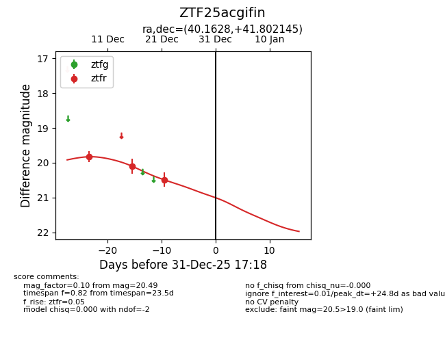
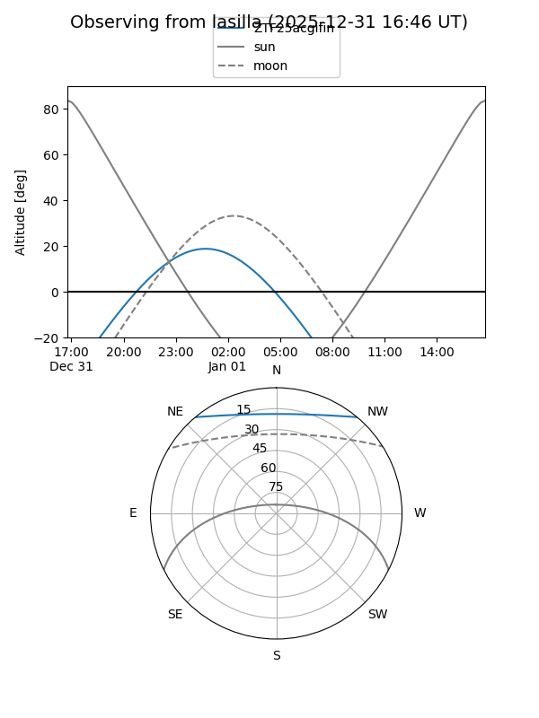
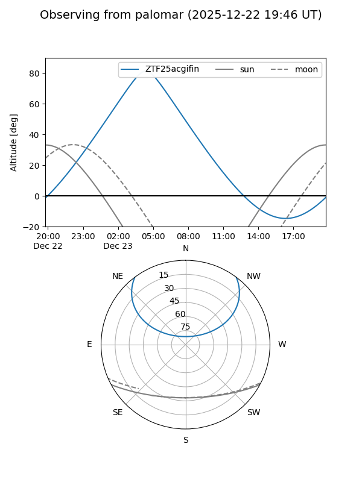
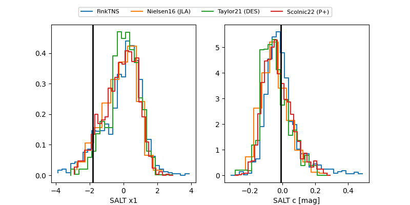

ZTF25acgifin
Target ZTF25acgifin at 2025-12-24 16:17
Aliases and brokers:
FINK: fink-portal.org/ZTF25acgifin
Lasair: lasair-ztf.lsst.ac.uk/objects/ZTF25acgifin
ALeRCE: alerce.online/object/ZTF25acgifin
alt names
ZTF25acgifin (ztf,fink_ztf)
Coordinates:
equatorial (ra, dec) = 40.1628,+41.80214
equatorial (HMS+DMS) = 02:40:39.06,+41:48:07.72
galactic (l, b) = (143.8356,-16.59402)
Flags:
Photometry:
last ztfr=20.49
3 ztfr detections
Lightcurve

Visibility


Additional plots
